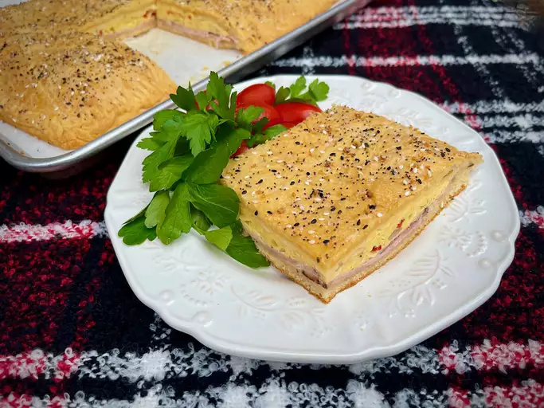

Crescent Breakfast Squares

Description
We love a savory breakfast, and these delicious breakfast squares fill the bill. Use ham and Swiss, or another deli meat and cheese combo, for a weekend breakfast or brunch. Prefer other veggies in your omelet? Substitute your faves!
Ingredients
- 2 12x16-inch parchment paper sheets
- 2 (12 ounce) packages crescent roll dough (such as Pillsbury® Grands!™)
- 8 slices deli ham
- 2 tablespoons Dijon mustard, or more to taste
- 3 tablespoons unsalted butter, divided
- ½ cup diced onion
- ½ cup diced red bell pepper
- 10 large eggs
- 1 tablespoon half-and-half cream or heavy whipping cream
- 1 pinch salt and freshly ground black pepper to taste
- 8 slices Swiss cheese
- 1 tablespoon bagel seasoning (such as Trader Joe's® Everything But the Bagel Seasoning Blend)
Steps
- Preheat oven to 375 degrees F (190 degrees C).
- Spread each sheet of parchment on a work surface. Unroll crescent dough, and place the contents of one can on each sheet. Roll dough into two 10x15-inch rectangles, making sure the perforations are sealed, one rectangle per parchment.
- Slide one dough rectangle with its parchment paper onto a 13x18-inch sheet pan; reserve the second rectangle for later use.
- Working with the first piece of dough, spread ham slices over the dough, leaving about 1/2-inch on all sides. Spread Dijon mustard in a thin layer over the ham slices.
- Melt 1 tablespoon butter in a large skillet over medium heat; cook and stir onions and bell peppers until slightly softened, about 3 minutes.
- Reduce heat to medium low; add 1 tablespoon butter to skillet with vegetables until melted.
- Whisk eggs, half-and-half or cream, salt, and pepper together in a large bowl until well blended. Pour egg mixture into the skillet with vegetables. Cook, using a spatula to lift and move, until eggs are just set and still wet looking.
- Spoon lightly cooked egg mixture in an even layer over the ham slices, maintaining the 1/2-inch dough border all around. Place sliced Swiss cheese in a single layer over the eggs.
- Place the second dough rectangle over all, using the parchment to help you align it. Carefully peel off the parchment. Moisten fingertips and press the edges of the two dough rectangles together, then use a fork to crimp.
- Melt remaining 1 tablespoon butter; brush over the top of the dough with a pastry brush. Sprinkle bagel seasoning over all.
- Bake in the preheated oven until nicely browned, 20 to 25 minutes. Remove to cool on a wire rack for about 15 minutes. Slice into serving pieces with a sharp knife.